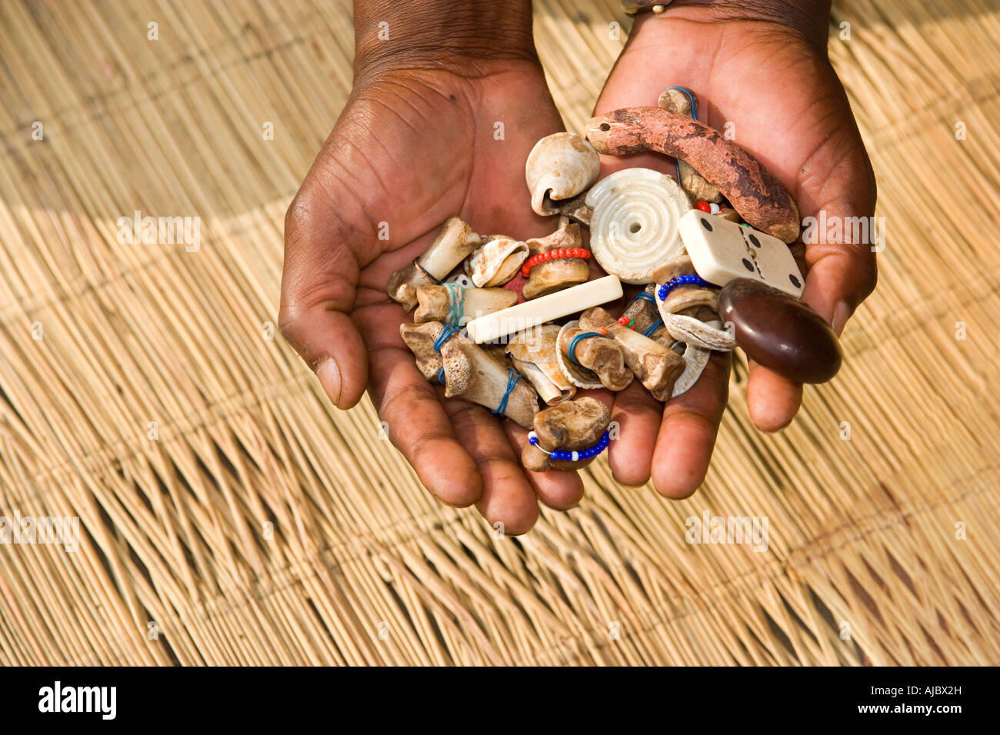
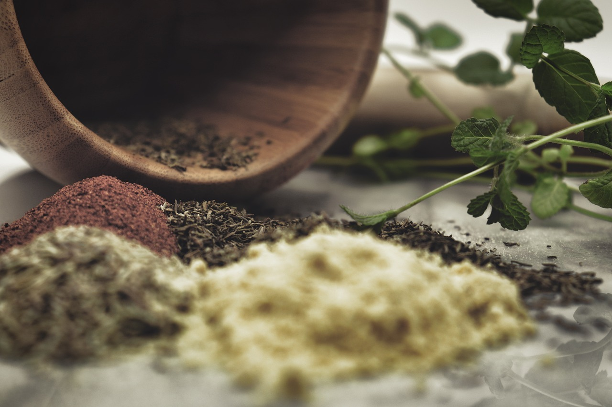
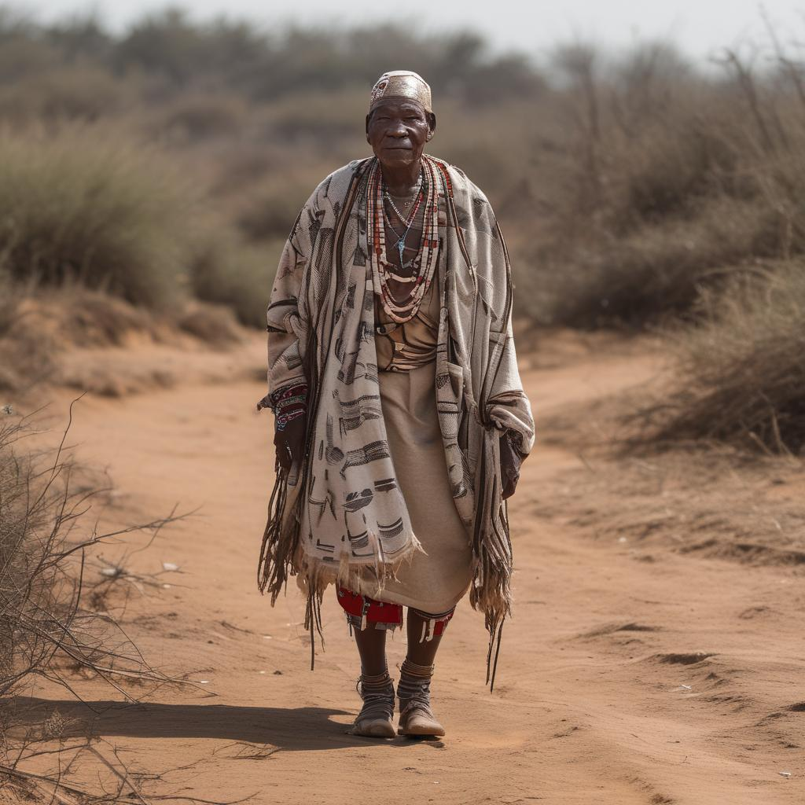

Welcome to TH Mpini
"Where ancient wisdom and modern healing meet."

Bones used in traditional healing

Healing through spiritual practices

Herbs for physical and emotional wellness

Rituals and initiation ceremonies
Sacred river used in rituals